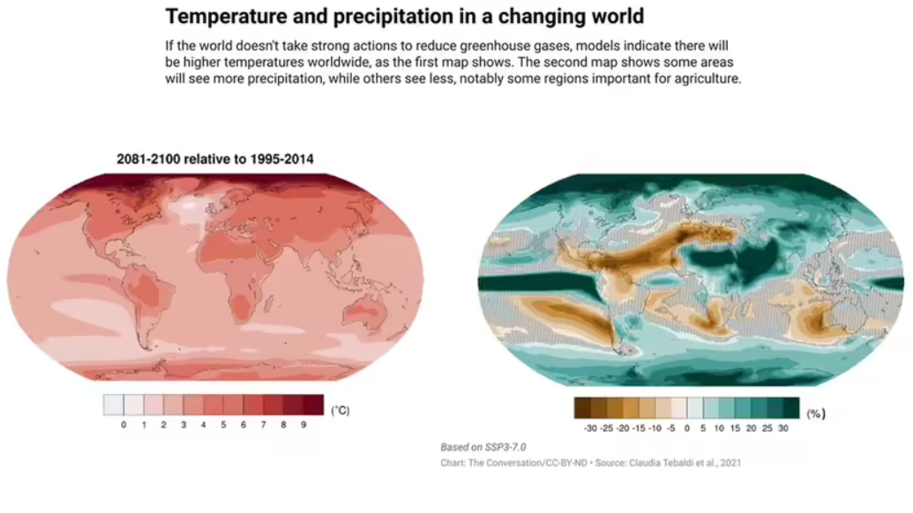
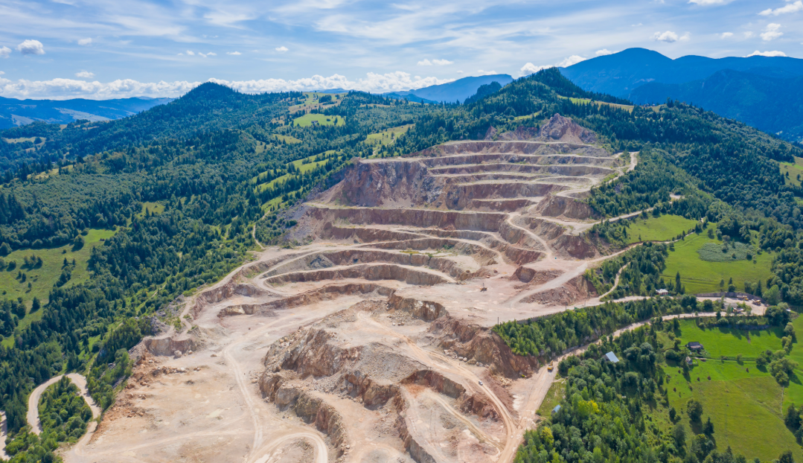

It helps make the global economy more resilient, it functions as an integral part of our culture and identity, and research has shown it’s even linked to our physical health.
However, despite its importance, Earth’s biodiversity has decreased significantly over the last few decades. In fact, between 1970 and 2016, the population of vertebrate species fell by 68% on average worldwide.
| Rank | Region | Average decline (between 1970 and 2016) |
|---|---|---|
| 1 | Latin America & Caribbean | 94% |
| 2 | Africa | 65% |
| 3 | Asia Pacific | 45% |
| 4 | North America | 33% |
| 5 | Europe & Central Asia | 24% |
Habitat destruction, often through deforestation, urbanization, agriculture, and infrastructure development, reduces the spaces where species can live and thrive.
Affects all levels of biodiversity, particularly in ecosystems like rainforests and coral reefs, which host a high number of unique species.
Rising global temperatures and extreme weather events disrupt ecosystems and force species to adapt, migrate, or face extinction. Changes in temperature and rainfall patterns can also alter habitats, making them uninhabitable for some species.
Affects species sensitive to temperature (e.g., coral reefs suffering from bleaching) and disrupts natural patterns like breeding, migration, and flowering.

Pollution comes in many forms, including plastic waste, chemical pollutants, pesticides, fertilizers, and air and water contamination. These pollutants poison ecosystems and disrupt the health of species at various trophic levels.
Toxins can accumulate through food chains, harming top predators, while plastic waste impacts marine life, and chemical runoff from agriculture damages freshwater systems.
Overfishing, logging, poaching, and unsustainable harvesting of plants and animals deplete populations faster than they can recover. Legal and illegal trade of wildlife also contributes to species decline.
Reduces populations of species directly (like fish and trees) and indirectly by harming the ecosystems that depend on these resources.

Species introduced (intentionally or accidentally) to non-native environments often lack natural predators, allowing them to outcompete native species for resources. Examples include the Burmese python in Florida or the zebra mussel in the Great Lakes.
Compete with native species for food and habitat, disrupt food webs, and even cause extinction of local species.
Human activity and global trade have facilitated the spread of pathogens like the chytrid fungus in amphibians or white-nose syndrome in bats, which can decimate populations.
Diseases, particularly novel ones, can be devastating to species without immunity, sometimes leading to extinction-level threats.
The demand for land, food, water, and resources rises with population growth, leading to increased pressures on ecosystems. Overconsumption depletes resources faster than they can be naturally replenished.
Exacerbates other threats, particularly habitat destruction, pollution, and overexploitation, creating cumulative stress on biodiversity.
| Threat | Proportion of threat (average across all regions) |
|---|---|
| Changes in land and sea use | 50% |
| Species overexploitation | 24% |
| Invasive species and disease | 13% |
| Pollution | 7% |
| Climate change | 6% |